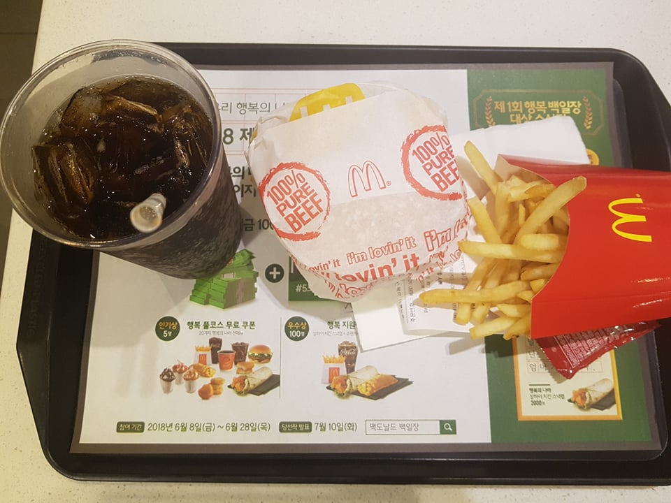
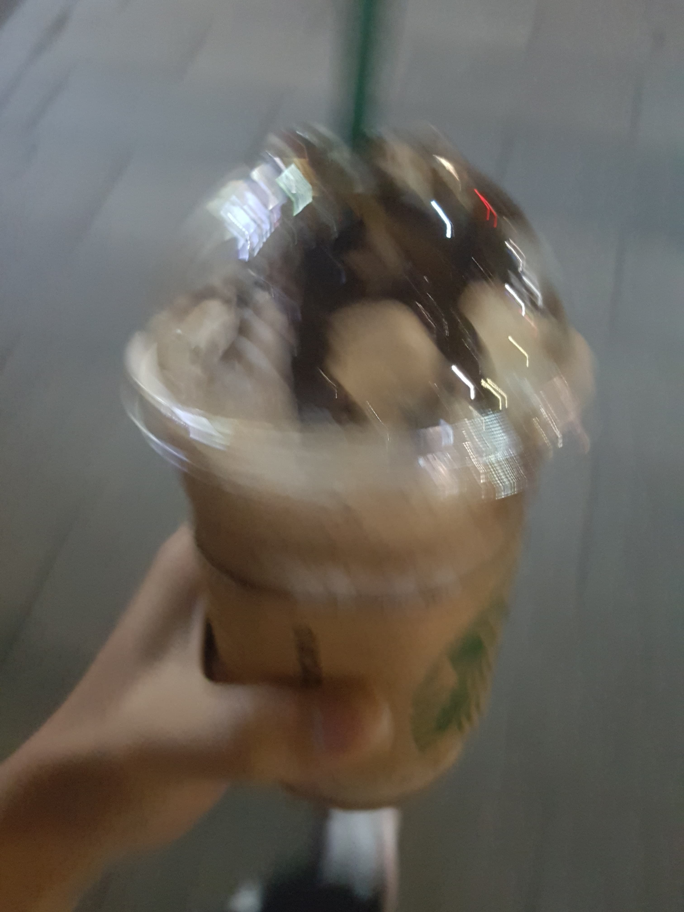

Developer's notes
The reason why I write it in English is because it is prettier.
-
18/06/15 20:30
 
To understand of being Starbucks', I had a hamburger at MickeyD's and the java chip frappuccino at Starbucks. -
18/06/15 22:40
예전에 짜둔 leunpark.com 소스를 보고는 그 미학적인 아름다움에 감탄하기도 잠시. 너무 난해해서 이해가 안 됨.